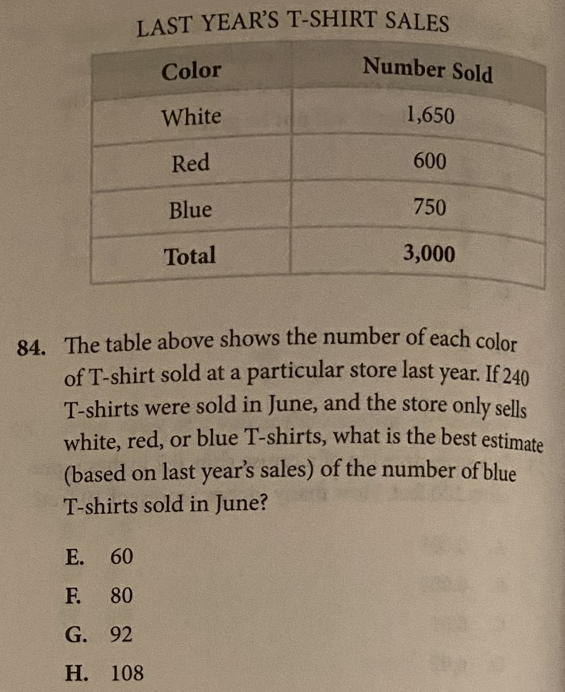

Use last year's color proportions to estimate a future month's sales.
Strategy
Find blue T-shirts as a fraction of last year's total. Apply that fraction to June's 240 sales. The three colors are NOT equal in proportion.
The Problem
The table above shows the number of each color of T-shirt sold at a particular store last year. If 240 T-shirts were sold in June, and the store only sells white, red, or blue T-shirts, what is the best estimate (based on last year's sales) of the number of blue T-shirts sold in June?

| Color | Units Sold |
|---|---|
| White | 1,650 |
| Red | 600 |
| Blue | 750 |
| Total | 3,000 |
Step-by-Step Solution
Common Mistakes
Ready?
Practice Unit 6_19
Practice this problem type.